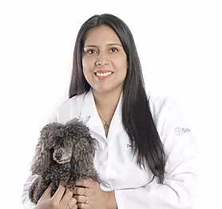

Staff Medico de muy alta calidad

DRA. MARÍA CABALLERO
- Médico Veterinario Zootecnista
- Egresada de la Universidad Científica del Sur
- Postgrado Medicina Felina (Argentina)
- Postgrado en Cirugía de Tejidos Blandos (Argentina)
- Pasantía en Medicina Interna de Animales Menores (Madrid -España)